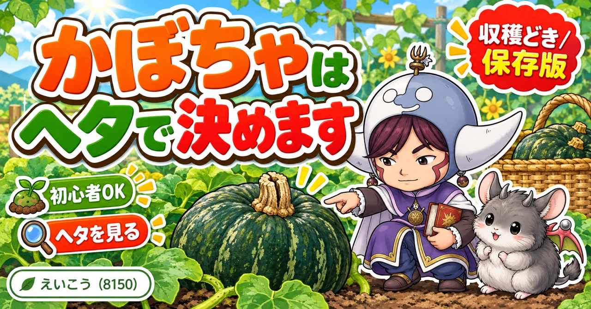
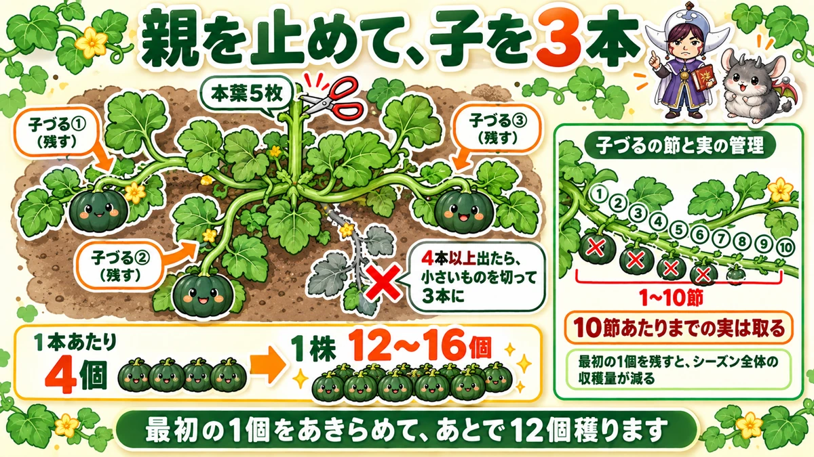
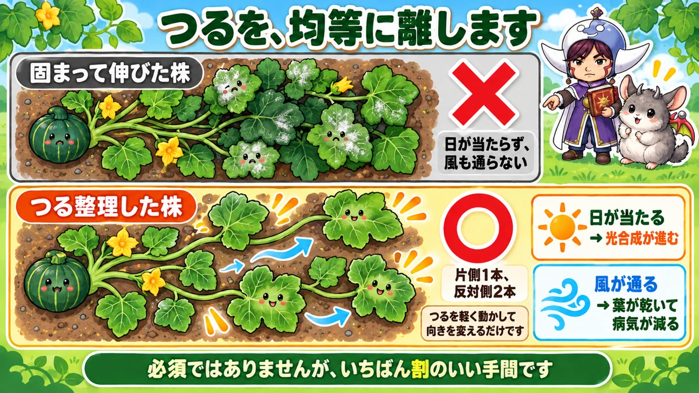
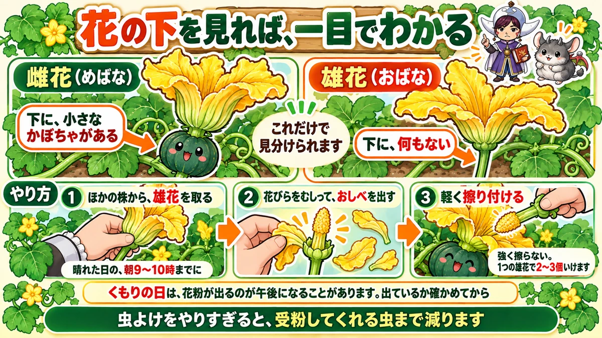
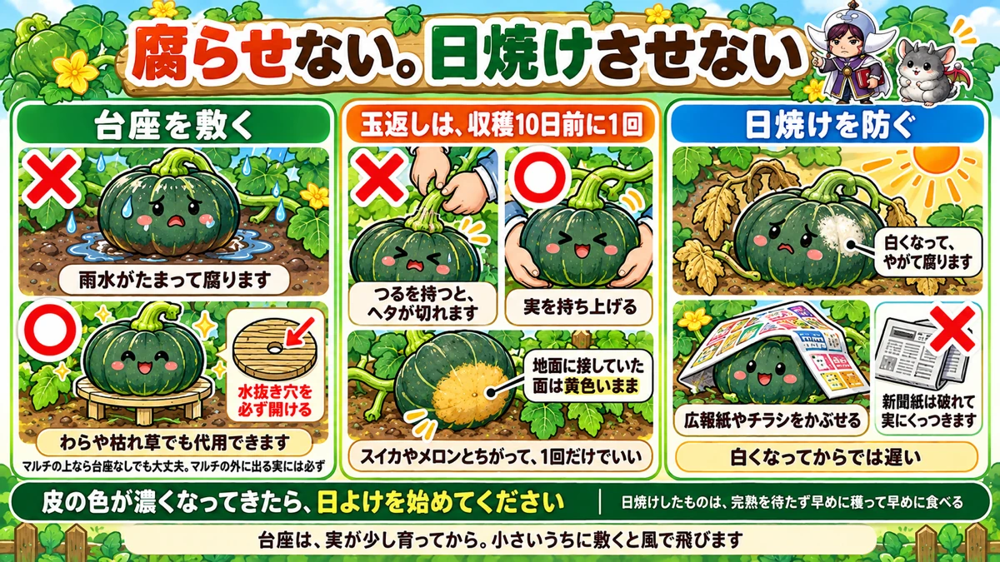
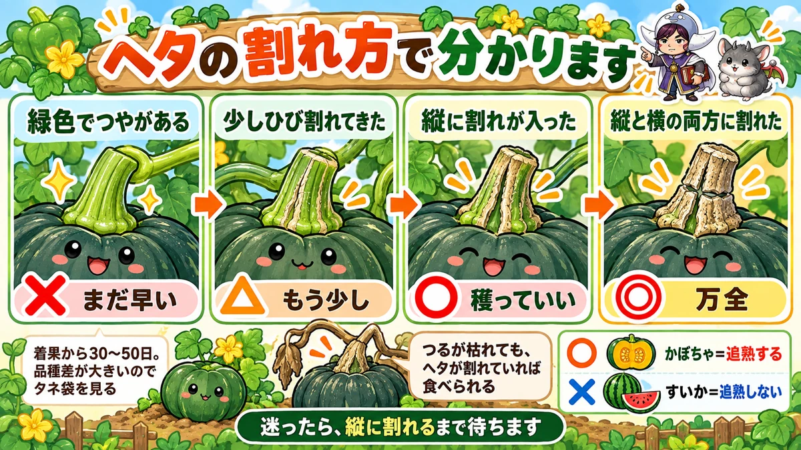
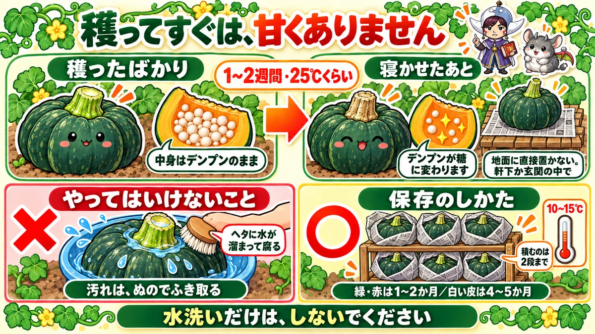

かぼちゃ栽培の調べ方ガイド｜つるの整理・受粉・収穫と保存の判断

どうも、8150（えいこう）です🌱 家庭菜園歴8年、理科の教員免許を持っていて、有機・無農薬で野菜を育てています。
📖 この記事の目次
この記事で分かること
- 栽培を始める前に、実の大きさと、つるを地面に広げるか上へ伸ばすかを決めます。
- 肥料は多ければよいわけではありません。葉とつるばかり増えるときは、追加する前に花と株の状態を調べます。
- 実のついた花と、ついていない花があります。受粉を手伝うなら、花粉が出ている朝の花を使います。
- 収穫予定日は受粉した日から計算し、最後はヘタの硬さや皮の様子も合わせて決めます。
- 収穫後は切り口を乾かす期間を取り、その後の保存とは温度や置き場所を分けて考えます。
- 摘心する葉の枚数、最初の実を残すか、追肥を何回するかには別々の考え方があります。数字だけを混ぜず、条件と一緒に選びます。
かぼちゃを育てるとき、最初に気になるのは「何個とれるかな」ですよね。でも、その前に見ておきたいのが、つるの行き先です。苗のうちはこぢんまりしていても、伸び始めると畑の景色が変わります。小さな苗を見て場所を決めると、あとで「そこまで行くんかい」となりやすい野菜です(笑)
このページでは、作業を始める前の数字、季節に沿った手順、困ったときの確認順をまとめました。みなさんの畑で次に何をするかを選ぶための、調べ物用の記事です。初めてなら早見と手順から。すでに実がついているなら、収穫や保存の項目へ進んでください。
全部の花に受粉して、全部の葉を数えて、毎日つるを切る必要はありません。大丈夫。まず『場所を確保する』『花を見分ける』『実とヘタを観察する』。この3つから始めると、管理の話がぐっと分かりやすくなります☺️
早見：かぼちゃの育て方（ひと目で分かる数字）
予定を立てるときの数字
- 通常の種まき：一般地の春作では3月下旬〜4月上旬が一つの目安。3月に始める方法では加温を組み込み、4月に無加温で育てる方法もあります。地域の気温を無視して日付だけ合わせないでください。
- 苗の植え付け：一般地では4月下旬〜5月、霜の心配がなくなってから。寒冷地は春の暖まり方、暖地は早植え時の冷え込みを見て、種袋の地域別表示と照らします。
- 遅い時期の栽培：通常作を遅らせる説明と、7月下旬〜8月上旬にまいて11月上旬に収穫する遅まきの説明は、別の作型です。秋に霜が早い地域へ、後者をそのまま当てはめません。
- 発芽に向く温度：栽培動画の説明には20〜25℃と25〜30℃があります。まとめると20〜30℃の幅ですが、両者を同じ温度指定と扱わず、種袋と育苗環境を優先します。
- 生育に向く温度：約20℃という目安があります。発芽時の温度と、葉やつるを育てる温度は別です。
- 発芽まで：約5〜7日。暖かい条件で3日という例もあります。何日たったかだけでなく、土が冷たくなっていないかを見ます。
- 育苗の期間：約30〜35日。本葉が4〜5枚ほどになった段階が、定植を考える目安です。
- 種まきの容器と深さ：直径10.5cmのポット、土をかぶせる深さ約1cmという説明があります。種の厚さの約3倍という表現もあり、深く埋めすぎないことが共通点です。
- 地面に広げる株間：1〜2m。1mの実践例と、ゆとりを取って2mを勧める説明があります。苗同士の間隔に加え、つるの伸びる面積を用意します。
- 空中栽培の株間：40〜50cmの例があります。支柱やネットへ上げる条件の数字で、地這い栽培の省スペース版としてそのまま使う数字ではありません。
- うね幅：空中栽培には80cm幅、地這いには95cm幅の被覆資材を使う例があります。95cmは資材の幅であり、共通のうね幅指定ではありません。うね、通路、つるの広がる場所を別々に見積もります。
- 元肥の準備：植える3〜4週間前〜約1か月前に整える説明と、土の状態によって元肥を足さない説明があります。前作の肥料が残っているかも判断材料です。
- 追肥の区切り：実施する方法では、植えて約1か月、つるが50〜60cm程度、最初の花が咲くころなどが最初の目安。次は、残した実が卵くらいに育つころです。
- 追肥の回数：なし、2回、植えて2週間後から約2週間ごと、という違いがあります。どれを使うかは、元肥と株の勢いを合わせて決めます。
- 摘心の目安：本葉4〜7枚の範囲で説明が分かれます。親づるを残す方法もあります。植え付け直後に枚数だけを理由に切らないようにしましょう。
- 残すつる：子づる2〜3本、子づる3本、親づる1本と子づる2本など。合計3本でも、どのつるを残すかは同じではありません。
- 種まきから収穫：約90〜120日。苗から始めた場合に、植え付け日からこの日数を丸ごと数える数字ではありません。
- 受粉から収穫：西洋タイプ40〜50日、日本タイプ30〜40日、ミニタイプ30〜35日という目安があります。品種の表示で確かめ、成熟のサインも組み合わせます。
- 収穫時に残すヘタ：2cm〜数cm程度。果実ぎりぎりで切るのではなく、切り口と実の間に長さを残します。
- 切り口を乾かし甘みを待つ期間：25℃前後で1〜2週間という説明、涼しい場所で約1か月という説明があります。長期保存の温度とは区別します。
- 保存の温度：丸のまま貯蔵する場合は10〜15℃が目安。収穫直後の処理で挙がる25℃と混ぜないでください。
- 保存できる期間：緑や赤の皮は1〜2か月、長くて3か月という目安。白い皮は4〜5か月という説明がありますが、品種と傷の有無で変わります。
- 連作の間隔：材料には連作しやすいという説明がありますが、一律の休作年数はありません。病気が出た履歴を無視して『何年でも大丈夫』とは考えず、前作の片づけと場所の見直しを行います。
数字を使う前の確認
同じ野菜の数字なのに、株間が40cmだったり2mだったりすると、もうどっちやねん、となりますよね。ここは平均を出す場面ではありません。上へ伸ばす栽培と地面へ広げる栽培で、必要な場所が違うからです。
最初に、次の項目を小さなメモへ書いてください。記録は立派なノートでなくてOK。種袋の写真と日付だけでも役立ちます。
- 品種と、実のおおよその大きさ
- 地這いか空中栽培か
- 種まき日と植え付け日
- 前作の野菜と、入れた肥料
- 受粉できた日、または初めて実の肥大を確認した日
あとで実が小さいとき、受粉したばかりなのか、育つ期間を十分過ぎたのかで確認先が変わります。日付は作業を増やすためのものではなく、余計な作業を減らすための目印です。
作業の手順（時期の順）
1．食べたい実と、つるの行き先を決める
- 『ほくほくした実』『しっとりした実』『小さく食べ切れる実』など、食べたいタイプを選びます。
- 苗や種袋で実の大きさ、栽培期間、推奨される仕立て方を確認します。
- 地面に広げる場合は、つるが隣の野菜や通路へ入り込まない配置を考えます。
- 空中栽培の場合は、小さな実をつけるタイプを候補にし、つると果実の両方を支える設備を用意します。
- 畑へ行ける時間帯を確認し、開花期に朝の観察ができるかを予定へ入れます。
西洋タイプはほくほく、日本タイプはしっとりという整理が入口になります。ただし、分類だけで食感が全部決まるわけではありません。料理の用途や、収穫後にどれくらい置くかも関わります。ここでは未確認の品種名をずらっと並べず、手元の表示で選べる条件を軸にします。
小さな実を選ぶと食べ切りやすく、空中栽培にも取り組みやすくなります。でも、実が小さいことと、つるがほとんど伸びないことは別です。ミニだからベランダの片隅に置けば終わり、とはいかないんですよね。伸びたつるの配置まで想像して選びましょう。
空中栽培では、葉が壁のように並びます。その後ろは日陰になりやすいため、近くに別の野菜を置くなら日当たりを確認してください。苗のときの日陰と、夏の大きな葉が作る日陰は違います。先に場所を考えておくと、途中で移動できない株を前に困らずにすみます。
2．土と排水を整え、肥料の計画を一つ選ぶ
- 雨のあとに水が残る場所を調べ、うねや通路から水が逃げる形に整えます。
- 前作に使った肥料、葉やつるの育ち方を振り返ります。
- 元肥を入れる場合は、使う製品の成分と表示を確認し、植え付け前に余裕を持って準備します。
- 植え穴へ肥料を置く方法を選んだ場合は、根鉢が直接触れないよう間に土を戻します。
- つるの伸びる場所を含めて草を整理し、敷くものや通路の管理を予定します。
元肥は、植える前に土へ入れる肥料です。かぼちゃは葉を勢いよく増やすので、その姿を見ると「もっと食べさせたら、実も増えるやろ」と考えたくなります。でも、窒素が多すぎると、花や実より葉とつるが目立つ状態になりやすいです。まず少なめに始める考え方と、すでに肥料が残る土では追加しない考え方があります。
肥料の量を比べるときは、同じ単位かも見てください。面積あたりの説明、植え穴あたりの説明、1回の追肥の説明は別物です。一つの方法から元肥の量を取り、別の方法から追肥の回数を取り、さらに別の方法の資材を足すと、全体量が見えなくなります。
今回は、配合の違う肥料を一つの共通量には換算しません。育て方の説明では、ぼかし、有機石灰、牛ふんや鶏ふん、有機肥料など、別々の資材を使う説明が確認できます。名前が似ていても成分や働きは同じではないため、手元の製品表示を基準にしてください。とくに石灰を肥料の代わりに足す、という読み方はしないようにしましょう。
根と肥料を離すために戻す土を『間土』と呼ぶことがあります。難しい特別な土ではなく、間に挟む普通の土のことです。苗の根を濃い肥料へ直接乗せない。この点を覚えれば、用語を暗記しなくても作業の意味はつかめます。
3．種から始めるなら、発芽後の光まで準備する
- 10.5cm程度のポットを用意し、土を湿らせてから種を置く位置を決めます。
- 種を横に寝かせ、約1cmを目安に土をかぶせます。
- 強く押し固める説明と、押さえない説明があるので、ここでは発芽の妨げになるほど締め固めない方針で進めます。
- 保温や乾燥防止に紙をかける方法を使う場合は、毎日芽を確認します。
- 芽が出たら覆いを外し、明るい場所で育てます。
- 土の乾き方を見て水を与え、本葉4〜5枚ほどになったら植え付けの準備をします。
種の殻を切って芽を出やすくする処理は、通常のかぼちゃ育苗で必ず行う作業ではありません。発芽しないかも、と心配して先にハサミを持ち出す必要はないんです。まず温度、水分、深さをそろえます。何もしなくてもよく発芽した例もありますが、その結果を、どんな環境でも同じになる保証として使いません。
芽が出るまでは保温、芽が出たら光。この切り替えを遅らせないことが大切です。紙の下で伸びたままにすると、茎が細く長くなりやすくなります。芽を見つけたら「お、出た！」で終わらず、覆いを外すところまでを一つの作業にしてください。
水は、土がまだ湿っているのに毎朝たっぷり足す、という固定メニューにしません。育苗中の過度な水やりは、ひょろ長い苗につながりやすいという説明があります。ただし、乾かしすぎてよい意味でもありません。表面とポットの重さを見て、必要なときに与える考え方です。
品種が違うポットには、最初から札を付けましょう。大きくなってから葉の形で当てるのは、ちょっとしたクイズ大会になります(笑) かぼちゃの仲間でも、ズッキーニは同じつる管理をする野菜ではありません。名前を分けておく方が、後の摘心で迷いません。
4．買った苗は背丈だけで選ばず、霜のあとに植える
- 茎の太さ、葉の傷み、全体の締まった姿を見て苗を選びます。
- 本葉の枚数と、地域の霜の心配がなくなったかを確かめます。
- 株間を決めた位置へ穴を掘り、穴の中と根鉢を湿らせます。
- 根鉢を崩しすぎないよう取り出し、苗を置いて周りに土を戻します。
- 接ぎ木苗なら、接合部が土に埋まっていないことを確認します。
- 大きな葉が風に振られる場所では、苗を守る囲いなどを使い、倒れや傷みを確認します。
背丈20cm程度を扱いやすい目安とする説明がありますが、数字ぴったりの苗を探す必要はありません。同じ高さでも、茎が細く間延びした苗と、茎が太く葉が締まった苗では状態が違います。高さの競争をさせず、全体の姿を見ます。
植え穴に水を入れる方法は、根鉢の周りだけでなく、その下の土にも湿り気を用意する考え方です。植えたあとに表面だけを濡らして終えるより、根が伸びる場所を意識できます。雨で十分湿っている場合まで機械的に水を追加せず、実際の土を見てください。
深さは苗の種類で分けます。自根の苗には子葉の下あたりまで土を寄せる説明がありますが、接ぎ木部分まで一緒に埋めてよいわけではありません。苗を買ったときの表示と接合部を見て、同じ野菜だから同じ深さ、で済ませないようにします。
袋を支柱で立てる囲いは、風や初期の虫から苗を守る選択肢です。囲いを置いたら管理完了、とは考えず、中の葉が食べられていないか、蒸れていないかも確認します。小さな苗の葉を残すことが、その後のつると実の準備につながります。
5．親づるを確認して、仕立て方を決める
- 株元から最初に伸びる主なつるを探し、親づるとして確認します。
- そのつるの葉の付け根から伸びる枝を、子づるとして区別します。
- 選んだ品種と育て方に合わせ、親づるを止めるか残すかを決めます。
- 摘心する方法では、本葉の枚数に加えて、植え付け後に根付いて伸び始めたかを見ます。
- 子づるを使うなら、元気なものを2〜3本、または3本残す方法から一つ選びます。
- 残すつるをそれぞれ別の方向へ広げ、重なる部分を少なくします。

摘心は、つるの先の成長点を止める作業です。葉を全部取り去ることではありません。株元からどのつるにつながっているかをたどってから、切る位置を決めます。葉が重なるとつながりが見えにくいので、いきなり目についた枝を切らない方が安心です。
『本葉5枚で子づる3本』は一つの分かりやすい型ですが、4枚、5〜6枚、6〜7枚という説明もあります。親づるを残したまま管理する方法もあります。図の形を全品種の義務にせず、選んだ型を理解するために使ってください。
植えた直後は、株が新しい場所へ根を伸ばす段階です。葉の枚数だけを数えて急いで切るより、植えて1〜2週間ほど様子を見る説明があります。苗が弱っているときに、定植と摘心を重ねる必要はありません。
子づるが4本出ていて、どれを残すか分からないときは、少し伸ばしてから弱いものを見分ける考え方もあります。最初の一瞬で正解を選ばなきゃ、と思わなくて大丈夫。つるの方向と勢いが見えてから整理する余地があります。
6．孫づると葉を整理し、空中栽培は結び直す
- 子づるから出る枝を孫づるとして確認します。
- 残したい実の位置を決めたら、それより株元側で混み合う枝を整理します。
- 実より先の枝は、すべて切る前提にせず、葉を残す方法を基本に考えます。
- 地這いではつるを均等に配置し、伸びる方向へ敷き藁などを用意します。
- 空中栽培では、つるをネットへ柔らかく結び、先が伸びるたびに支える位置を追加します。
- 枯れた葉や傷んだ部分を片づけ、健全な葉までまとめて取りすぎないようにします。

つるを整理する目的は、見た目をきれいにするだけではありません。花や実を探しやすくし、葉が重なり続ける場所を減らすことです。すべてのつるを同じ方向へ束ねると、せっかく広い場所を用意しても葉が団子になってしまいます。
かぼちゃのつるは、ネットを用意しただけで安定して上へ登るとは限りません。つるが揺れると傷みや生育への負担が出るという説明があります。結ぶときは、茎を締めつけない余裕を残し、支柱やネット側へ重さを受け持たせます。
敷き藁は地表の泥はねや乾燥を減らし、つるが巻きひげで落ち着く場所にもなります。6月ごろ、葉が茂り始めた時期に、株元からつるの進む方へ敷く例があります。土と実の接触を減らしたいときにも使えますが、敷いたものが常に濡れたままになっていないかは見てください。
株元の風通しをよくすることと、葉を大量に失わせることは別です。実を育てる葉まで取りすぎると、日差しが果実へ直接当たりやすくなります。傷んだ葉を片づけたあとは、実の陰が残っているかも確認しましょう。
7．開花したら、花の下を見て受粉を手伝う
- 花の付け根に小さな実の形があるかを見ます。あるものが雌花、細い柄だけのものが雄花です。
- 雌花のつぼみが大きくなったら、2〜3日後の朝を一つの目安に観察します。
- 当日に開いた雄花で、花粉が出ていることを確認します。
- 雄花の花びらを外し、花粉の付くおしべを見える状態にします。
- 雌花の中心にある柱頭へ、おしべを軽く触れさせます。
- 日付を記録し、その後の数日で小さな実が大きくなっていくかを見ます。

花の下に小さなかぼちゃが見えても、収穫できる実が確定したわけではありません。それは受粉前からある子房です。受粉できずにしぼむこともあるため、『見えた』『育ち始めた』を分けて観察します。
時刻は午前9時まで、9〜10時まで、午前中など説明に幅があります。迷ったら、開いている花と花粉を確認できる早い時間を確保する考え方が取り組みやすいです。時計だけを見て、花粉のないおしべをこすり付けても目的は果たせません。
曇りの日には花粉の出方が遅れるという説明もあります。ただし、それを『午後ならいつでも受粉できる』と読み替えません。花の状態を見て、当日の花粉を使えるかを確かめます。強くこする必要はなく、柱頭を傷めないよう軽く触れさせればよい作業です。
自然の虫が十分訪れる畑では、毎回の人工授粉を省く考え方もあります。一方、虫の少ない時期、長雨、実が続けて育たないときは、朝に手伝う意味があります。防虫と受粉はセットで見ましょう。葉を食べる虫を減らす工夫が、花へ来る虫にも影響していないか、という視点です。
8．残す実を決め、水と追肥を株に合わせる
- 株元に近すぎる実や、まだ葉の少ない株に負担がかかる実を確認します。
- 最初の実を外して後の実を育てる方法か、位置と株の勢いを見て残す方法かを選びます。
- つる先の向き、葉の勢い、花と実の有無をまとめて観察します。
- 追肥する方法では、選んだ区切りで必要量を判断し、元気すぎる株へ自動的に足さないようにします。
- 地這いで実が卵大になったころに追加する方法では、つるの先付近まで根の範囲が広がる考え方を踏まえます。
- 雨がなく土が乾き、実の肥大も進まない場合は、根のある土へ十分に水を届けます。
葉が大きくなっていると安心したくなりますが、つると葉が増えること、実が増えることは別です。先端が上へ強く反っている姿を、肥料をよく吸っている目安とする説明があります。ただし、先端一か所だけで原因を決めず、実がつくか、株全体が過密かも合わせて見ます。
追肥を2回する方法では、最初はうねの肩、次はつるの先付近という位置の違いがあります。ここでいう『つるの先』は、地這いの株で根の広がる土を考えた説明です。空中栽培で宙にあるつるへ肥料を付ける意味ではありません。根のある場所を見失わないでください。
水やりも、7月なら禁止、8月なら毎日、と月だけで切り替えません。前半は控えめに、夏に雨が少ないときは十分に与える、という説明があります。畑が湿っている日と、雨が続かず根の範囲が乾いた日は分けて扱います。
一度の水量を増やす説明には、10Lのバケツを複数杯使う例もあります。ただ、畑の広さや土で届き方が違うため、全株共通の固定量にはしません。少しずつ表面を濡らすだけで終えず、必要なときに根の範囲へ届くかを確認するのが目的です。
9．肥大中の実を、地面と強い日差しから守る
- 実が土へ直接当たる位置か、下に水が残る位置かを見ます。
- 台座を使う場合は、水が抜ける穴や形を確認します。
- 小さすぎて台座が風に飛ぶ段階では固定方法を考え、実が育ったら位置を調整します。
- 空中の実はネットなどで下から受け、実のお尻が支えに乗るようにします。
- 葉が枯れて実へ日光が直接当たり始めたら、変色する前に日よけを考えます。
- 玉返しは収穫に近づいたころ、果実を支えて慎重に行います。

台座は、置けば何でもよいわけではありません。水のたまる皿のような形だと、実を地面から離しても濡れた状態が続きます。下へ水が抜けること、実が安定することを一緒に見ます。被覆資材の上なら台座を省ける説明もありますが、水が残る場所や虫の被害がある場所まで無条件に省く判断はしません。
空中栽培では、つるだけが果実の重さを支えると、折れたり裂けたりすることがあります。吊るしたネットが実より下へ垂れているだけでは、まだ重さを受けていません。実の底がネットに乗ったかを確認して、支柱などへ荷重を逃がしましょう。
日焼けは、白く変わったあとに覆っても元の状態へ戻す作業ではありません。葉の陰が減ったタイミングを見て、先に守る考え方です。紙で覆う方法では、雨で破れたり貼り付いたりしないか、風で飛ばないかを点検します。覆いで湿気を閉じ込めないことも大切です。
玉返しは、実の向きを変えて地面側を調整する作業です。収穫の約10日前に1回という説明と、1〜2回という説明があります。つるを引っ張って持ち上げず、果実そのものを両手で受けて動かします。色をそろえようとしてヘタを折ったら、ちょっともったいないですよね。
10．受粉日とヘタを照らし、晴れた日に収穫する
- 品種の収穫日数と、受粉の記録を照らします。
- ヘタの緑色が薄れ、硬く乾いたようになっているかを見ます。
- 白い筋だけなのか、縦の亀裂なのか、付け根付近の横方向の亀裂なのかを区別します。
- 皮の艶、模様、硬さも見て、複数のサインを合わせます。
- 雨で濡れていない晴れた日の午前中を候補に、果実を支えながら切ります。
- ヘタを短くしすぎず、2cm〜数cmほど残し、傷の有無を確認します。

緑色でみずみずしいヘタ、白い線が出たヘタ、硬くひびの入ったヘタを、全部『線がある』でまとめないでください。成熟の進み方を観察する場所です。縦方向のひびを目安に収穫する考え方と、横方向のひびまで待つ考え方があります。
皮も触って確かめられますが、傷を付けてまで試す必要はありません。爪跡が付きにくい硬さという説明は、強く刺して判定する指示ではないんです。見た目、軽く触れた硬さ、日数を合わせます。
日数を過ぎてもサインがはっきりしない場合は、品種の説明を再確認します。逆に、病気で葉が急に失われた株などは、予定どおりの完熟を待てる状態かも見ます。カレンダーは出発点、実物は最後の確認先。この順で考えると判断しやすくなります。
11．収穫直後の処理と、長く置く保存を分ける
- 収穫した実を洗わず、表面の泥は乾いた布などで落とします。
- 傷のある実と健全な実を分け、傷んだものを長期保存の列へ混ぜません。
- 地面へ直接置かず、風が通り、切り口を乾かせる場所へ並べます。
- 選んだ品種に合う期間、収穫後の変化を待ちます。
- 長く保存する場合は、切り口を乾かす期間とは別に、10〜15℃程度の環境を検討します。
- 定期的にヘタと底を確認し、軟らかい部分や腐敗が出た実を早めに分けます。

収穫直後に切って、思ったほど甘くないことがあります。実の中では、収穫後にもデンプンが糖へ変わる変化が進みます。切り口を乾かす処理と合わせて、1〜2週間ほど待つ方法があります。ただし、涼しい場所で約1か月という別の説明もあるため、日数だけを全国共通の決まりにしません。
25℃前後で切り口を乾かす話と、10〜15℃で保存する話は、工程が違います。甘くしたいからと暖かい場所へずっと置けば、ほくほくした食感が変わり、傷みやすくなることもあります。『待つ期間』『その後の保管』を分けて予定しましょう。
洗うと見た目はきれいになりますが、ヘタのくぼみなどへ水が残ると傷みのきっかけになります。丸のまま保存する実は、泥を拭いて管理する考え方です。食べるために切る直前の扱いと、何週間も保存する前の扱いを混ぜないでください。
実を重ねるなら2段、多くても3段という説明があります。置き場所に余裕があれば、点検しやすい並べ方を選びます。下の実が見えないほど積むと、傷みに気づきにくくなります。保存も収穫の続き、という感じですね。
12．残ったつるを片づけ、次の作付けへつなぐ
- 収穫が終わった株と、まだ健全な実を育てる株を区別します。
- 病気の葉や傷んだ実は、畑に残し続けず、地域の処分方法に沿って片づけます。
- 空中栽培の健全なつるは、根元で切ってしばらく乾かすとネットから外しやすくなります。
- 支柱、結びひも、敷いた資材を回収し、次の作物の根や作業の邪魔にならないよう整理します。
- 病気の出方、受粉の様子、余った肥料の有無を短く記録します。
健全なつるは根元で切って約1週間置くと、枯れてから外しやすいという説明があります。ただし、病気が広がっている残さを乾かすために長く放置する方針ではありません。片づけの楽さと、病気を残さないことを分けて考えます。
次の候補には、にんにく、玉ねぎ、ほうれん草、キャベツなどが挙がります。かぼちゃの終了日と、次の野菜の適期が重なるかを見て選んでください。収穫量だけでなく、いつ場所を空けられたかも記録すると、翌年の畑の予定が立てやすくなります。
失敗の見分け方（症状→原因→やること）
種をまいたのに芽が見えない
- 症状：予定していた5〜7日ほどを過ぎても、土の上に芽が出ません。
- 考えられる原因：育苗場所が冷たい、土が乾きすぎた、湿りすぎた、深く埋めたなど。発芽日数は温度で変わります。
- やること：置き場所と土の湿り気を確認します。日数だけで掘り返したり、水を連続して足したりせず、種袋の条件を見直します。
発芽前は、心配でつい水を増やしがちです。でも、低温が原因なら水を増やしても温度の問題は解決しません。まず『暖かさ』『水分』『深さ』を別々に確認します。芽を出す処理を追加する前に、最初の条件をそろえる方が判断しやすいです。
苗の茎が長く、細く伸びている
- 症状：葉と葉の間が間延びし、苗が倒れやすくなっています。
- 考えられる原因：発芽後も覆いが残っていた、光が不足していた、水が多すぎたなど。
- やること：覆いを外して明るさを確保し、水を与える前に土の状態を見ます。購入する場合は、同じ売り場でも太く締まった苗を選びます。
伸びた茎は、管理を変えた瞬間に短く戻るものではありません。これから伸びる部分を健全にする、という方向で考えます。深く埋めれば何でも解決、と進める前に、接ぎ木苗かどうかも確認してください。
苗の葉に穴が増え、育ちが止まる
- 症状：小さな苗の葉が食べられ、葉の面積が減っています。
- 考えられる原因：ウリハムシなどの食害。ウリハムシは成虫が葉を食べ、幼虫は根を食べるという違いがあります。
- やること：葉の表裏と周辺で虫を確認し、初期の苗を囲いなどで保護します。動きの鈍い朝に捕まえる方法もあります。
葉の多い大株と、まだ数枚しかない苗では、同じ穴でも影響が違います。少し食べられた大株の姿だけを見て、小苗も放置してよいと考えないようにしましょう。逆に、穴の数だけで株を見限らず、新しい葉が伸びているかも見ます。
虫を確認しないまま対策を重ねると、花へ来る虫まで減らしてしまうことがあります。葉を守る時期と、花の受粉を助けたい時期を意識し、目的に合う方法を選んでください。
葉とつるは立派なのに、実が育たない
- 症状：つるが伸び、葉も大きいのに、収穫へ向かう実が見当たりません。
- 考えられる原因：肥料が多すぎる状態、受粉不足、葉が少ない段階での着果負担など。
- やること：まず花を見ます。雌花があるか、花粉が出る雄花があるか、虫が訪れているかを確認。その後、元肥と追肥の量、つる先の勢いを振り返ります。
ここでいきなり「実の肥料が足りない」と追加しないことが大切です。肥料過多なら、同じ対応が逆方向へ働きます。つる先が上へ反る姿は参考になりますが、風や誘引で向きが変わった部分もあるため、株全体の勢いと合わせて考えます。
花が咲いているのに実が増えないなら、肥料より先に受粉の確認です。葉だけが茂り花の状態も違うなら、施肥の履歴を見直す。この順で分けると、やることが絞れます。
小さな実が黄色くなり、しぼむ
- 症状：花の下にあった実が大きくならず、黄色くなったり傷んだりします。
- 考えられる原因：受粉できなかったことが候補です。長雨や虫の少なさ、花の食害、株の負担も確認します。腐敗した実すべてを受粉不足と決めつけません。
- やること：次に咲く雌花を朝に観察し、花粉が出ていれば人工授粉を試します。傷んだ実は片づけ、受粉した実がその後肥大するかを比べます。
小さな実が付いていたのに、とがっかりしやすいところです。でも、花の下の膨らみは、受粉の成功証明ではありません。次の開花を観察する材料にして大丈夫です。どの花が何日に咲いたかを残すと、同じ失敗が続いているのかも分かります。
葉の表面に白い粉のようなものが広がる
- 症状：葉の一部から白い粉を付けたような状態が広がります。
- 考えられる原因：うどんこ病が候補です。もともとの葉の模様や付着物と混同しないよう、広がり方と新しい葉も観察します。
- やること：病気が疑われる葉を早めに整理し、つるの重なりと風通しを見直します。健全な葉まで一度に取りすぎず、果実に直射日光が当たるかも確認します。
早い段階で葉が失われると、実の肥大が終わる前に株が弱ることがあります。白くなった葉の枚数だけでなく、『いつ出たか』『実がどこまで育ったか』が大事です。夏の終わりの大株と、着果前の小株では対応の急ぎ方が違います。
葉に散布する資材を使う方法もありますが、頻度の説明が人によって分かれています。このページでは未確認の濃度や使い方を処方しません。まず観察、病葉の整理、配置の見直しから始める形にします。
雨の多い時期に葉や株が急に傷む
- 症状：白い粉とは違う斑点や傷み、しおれが見られます。
- 考えられる原因：材料ではべと病、疫病、炭疽病なども挙がりますが、見た目一つで病名を確定できません。排水の悪さや根の不調も確認対象です。
- やること：株元、葉の表裏、雨のあとに水が残る場所を記録します。広がる傷みは早めに相談し、病気の残さを畑へ放置しません。
葉が傷んだら何でもうどんこ病、という分類は避けます。白い粉なのか、斑点なのか、株全体がしおれるのかで見方が変わります。写真を撮る場合も、傷んだ部分だけでなく全体と株元を残すと、状態を伝えやすいです。
実の上側が白っぽく変色する
- 症状：日差しの当たる面に色の変化が出ます。
- 考えられる原因：葉が減り、実へ強い直射日光が当たり続けたことによる日焼けが候補です。
- やること：残っている葉の陰と、日光の当たり方を確認し、未被害の実へ日よけを用意します。変色した部分が軟らかくなっていないかも点検します。
病葉を取り除いたあとに、実が急にむき出しになることがあります。葉の手入れと果実の保護を別々の日の仕事にせず、同時に見ておくと気づきやすいです。白くなってから覆えば治る、という対応ではありません。
実の底が濡れたままで、腐り始める
- 症状：土や台座に触れている側が傷み、軟らかくなります。
- 考えられる原因：水のたまり、通気不足、虫の食害による傷など。
- やること：台座の水抜き、実と土の接触、敷いたものの湿り方を調べます。健全な実には水が抜ける支えを用意し、傷んだ実は保存用から外します。
下側は普段の立ち姿では見えにくい部分です。無理にひっくり返すのではなく、果実を支えながら、底が常に湿っていないかを確認しましょう。台座があることより、水が残っていないことが目的です。
空中の実が重くなり、つるが裂けそうになる
- 症状：果実の付け根に荷重がかかり、つるや支えが不安定になっています。
- 考えられる原因：果実の重さをつるだけで受けている、ネットが低すぎて実を支えていないなど。
- やること：実を下から支え、ネットのお尻側へ果実を乗せます。支柱やネットの固定も確認し、持ち上げるときにヘタを引っ張りません。
実が大きくなってから急に袋を探すより、着果を見つけた時点で支えを用意しておく方が落ち着いて作業できます。袋の中に入ったかではなく、底で重さを受けたかを見ます。
収穫したのに、甘みや食感が思ったものと違う
- 症状：すぐに調理した実の甘みが弱い、または長く置いた実のほくほく感が減っています。
- 考えられる原因：品種の違い、収穫の早さ、追熟する期間、保存温度の違いなど。
- やること：受粉からの日数、ヘタの状態、収穫後に置いた期間を振り返ります。健全な丸の実なら、品種に合う追熟の予定を確認します。
甘くないから株の肥料が足りなかった、と一つに決めないでください。畑で成熟する期間と、収穫後の変化は別の工程です。逆に、甘くなるまで高温へ置き続けると、食感や保存性が変わることがあります。
保存中にヘタの周りや底が傷む
- 症状：切り口やくぼみ、重なった下側に軟らかい部分が出ます。
- 考えられる原因：洗った水が残った、切り口が乾いていない、収穫時の傷、高温や蒸れなど。
- やること：傷んだ実を健全な実から分け、置き場所と通気を見直します。残りの実も底とヘタを点検し、積みすぎを減らします。
保存は、置いた日から何もしなくてよい期間ではありません。外見はきれいでも下に傷みがあることがあります。収穫直後に見た面だけでなく、保管中に見えなくなった面を確認してください。
説明が分かれていること
発芽の温度と、種まき後の押さえ方
- Aという説明：発芽には25〜30℃を目安にし、覆土のあとに強く押さえない方法です。
- Bという説明：20〜25℃を目安にする方法や、土をしっかり押さえる種まきの実演もあります。
- どう考えればよいか：温度と土の扱いは別々の論点です。種袋の条件を確認し、乾燥させず、発芽を妨げるほど締め固めない方針で進めます。
いずれも栽培動画の説明に出てくる数字や手順ですが、同じ説明系列の中にも違いがあります。『何℃が唯一の正解か』より、実際の育苗場所が冷え込むか、芽が出たあとに光を確保できるかを見ます。20℃でも芽が出た例と、25℃以上を適温とする説明は、ただちに矛盾するとは限りません。発芽可能な条件と、発芽をそろえやすい条件を分けると整理できます。
地這いの株間と空中栽培の株間
- Aという説明：地面へつるを広げる方法では、1m、または1〜2mを取ります。
- Bという説明：ネットへつるを上げる実践では40〜50cmの例があります。
- どう考えればよいか：小さい方の数字を選ぶ前に、仕立て方を決めます。地面に伸ばすつるを40cm間隔へ詰める計画とは分けます。
幅80cm、長さ3mの場所へ複数株を植える空中栽培例もありますが、その面積だけで設備の規模を決めないでください。上に広がる葉、実を支える場所、後ろ側の日陰、作業する側の通路まで含めて成立する方法です。株間は計画の一部であり、畑全体の必要面積そのものではありません。
接ぎ木苗は必要か
- Aという説明：購入できるなら接ぎ木苗を選び、病気への備えにする考え方があります。
- Bという説明：かぼちゃは比較的育てやすく、自根の苗で十分という考え方もあります。
- どう考えればよいか：自根だから栽培できないわけではありません。土の病気の履歴、品種、苗の状態を見て選び、接ぎ木苗を使う場合は接合部を埋めないようにします。
接ぎ木は、別の植物の根側へ目的の品種をつないだ苗のことです。『接ぎ木なら何の病気にもならない』という意味ではありません。よい苗を買う判断と、植える場所の排水や肥料を整える判断は、どちらか一方で代用できるものではないんです。
摘心の枚数と、残すつるの組み合わせ
- Aという説明：本葉4〜5枚ごろに親づるを止め、子づる3本を使う方法です。
- Bという説明：本葉5〜7枚ごろを区切りにする方法、親づる1本と子づる2本を使う方法、摘心しない方法もあります。
- どう考えればよいか：品種と仕立て方をそろえて選びます。葉の枚数を平均して『必ず6枚』とは決めず、植え付け後の回復も確認します。
子づる3本と、親づるを含む合計3本は、図にすると枝の位置が変わります。『3本』だけを覚えると、切るべきでない親づるを切ってしまうことがあります。根元からのつながりを一度たどり、どの3本なのかを説明できる状態にしてから手を入れましょう。
孫づるについては、残す実より株元側を整理し、実より先を残すという方向で説明が近づきます。ただし、実をつけたい葉の位置や、株の勢いに応じて切る範囲に違いがあります。数字だけをまねるより、葉の重なりと実の位置を確認することが大切です。
最初にできた実は、必ず取るか
- Aという説明：最初の実を外し、葉が十分増えた子づるの10〜13枚目あたりで着果させる方法です。
- Bという説明：一番果でも残せるとする説明があります。ただし、株元に近すぎる実は早めに外す考え方です。
- どう考えればよいか：『最初だから取る』『最初だから残す』の二択にせず、実の位置、葉の数、株の勢いを見ます。細かく摘花して受粉の機会まで失うことにも注意します。
ここは家庭菜園で迷いやすいです。ようやく雌花を見つけたのに取るんか、となりますよね。取る方法の狙いは、その一個を嫌うことではなく、株が小さい段階での負担を避けることです。一方、放任寄りの方法は、受粉できる機会を残して着果を狙います。求める管理の細かさが違うので、一つの決まりへ押し込めません。
追肥なし、2回、約2週間おきの違い
- Aという説明：元肥のあとに2回。最初はつるが伸び始めたころ、次は残した実が卵大になったころです。
- Bという説明：追肥をしない方法と、植えて2週間後から約2週間おきに行う方法があります。
- どう考えればよいか：最初の土と施肥条件をそろえて比べます。回数の多い方法を使っているから、実も多くなると考えないでください。
約2週間おきという説明でも、やりすぎへの注意が添えられていて、勢いの強い株では控える判断が含まれています。日程は観察する区切りであって、必ず肥料を入れる命令ではありません。追肥しない方法も、栄養が存在しない土で水だけ与える意味とは分けて読みます。
元肥の量にも、面積あたりの配合例と、植え穴へ少量入れる例があります。ここでは資材の成分が違う量を横並びにしません。『元肥を少なくしたから別の説明の追肥を全部足す』という足し算より、一つの方法を土の状態に合わせて調整する方が全体を追えます。
人工授粉をするか、虫に任せるか
- Aという説明：自然の訪花昆虫が働く環境では、基本的に任せる方法です。
- Bという説明：虫の少ない時期や悪天候、若い実の脱落が多い場合には、人工授粉を勧める方法です。
- どう考えればよいか：毎回行うか省くかを先に固定せず、花へ虫が来るか、実が肥大するかを確認します。授粉するなら開いた花と花粉を見て、早朝を中心に動きます。
同じ説明系列でも、自然任せの話から、条件次第で人工授粉を勧める話へ変わっています。これは畑の状況に合わせた管理として理解できます。朝に行けない人が必ず失敗する意味でも、虫が見えたらすべて成功する意味でもありません。
収穫は横のひびまで待つか
- Aという説明：ヘタがコルク状になり、横方向のひびも出る段階を完熟の目安にする方法です。
- Bという説明：乾きすぎるまで待たず、少し青みが残るころに収穫して、家で追熟させる方法があります。
- どう考えればよいか：品種の収穫日数と、ヘタ以外の成熟サインも組み合わせます。すべての実が同じ形のひびになるまで待つ、という一律の条件にはしません。
日数にも西洋、日本、ミニで差があります。分類上の目安より確実に決めたい場合は、種袋や種苗会社の品種情報を確認します。株の病気や実の傷みが進んでいるときは、完熟のサインだけを待つ判断が合うかも見直します。
追熟は1〜2週間か、約1か月か
- Aという説明：25℃前後で1〜2週間置き、切り口を乾かしながら甘みの変化を待ちます。
- Bという説明：涼しい場所へ約1か月置く方法があります。また、25℃で約10日、その後に低温で保存する工程もあります。
- どう考えればよいか：期間だけでなく温度と目的をセットで読みます。長期保存の10〜15℃という数字と、収穫直後の処理を区別します。
『長く置けば置くほどおいしくなる』ではありません。甘みが変わる一方で、食感と傷みやすさも変化します。まず品種に合う方法を一つ選び、健全な丸の実を観察しながら進めます。傷んでいる実を追熟という名前で放置しないことも大切です。
よくある質問
学ぶ：かぼちゃのしくみ🔬
まとめ
敷きわら
実が土に触れていると傷みます。つるの下に敷いておくと、泥はねも防げます。
![[商品価格に関しましては、リンクが作成された時点と現時点で情報が変更されている場合がございます。]](https://hbb.afl.rakuten.co.jp/hgb/56bc2fb2.ff40a6e6.56bc2fb3.618f6a70/?me_id=1257026&item_id=10000211&pc=https%3A%2F%2Fthumbnail.image.rakuten.co.jp%2F%400_mall%2Fsharuka%2Fcabinet%2F09042254%2Fimgrc0081094692.jpg%3F_ex%3D240x240&s=240x240&t=picttext "[商品価格に関しましては、リンクが作成された時点と現時点で情報が変更されている場合がございます。]")

収穫バサミ
ヘタが硬いので、手ではもげません。コルク状のひび割れを見てから切ります。
![[商品価格に関しましては、リンクが作成された時点と現時点で情報が変更されている場合がございます。]](https://hbb.afl.rakuten.co.jp/hgb/56d22030.def85fa7.56d22031.b89fde86/?me_id=1250472&item_id=10022339&pc=https%3A%2F%2Fthumbnail.image.rakuten.co.jp%2F%400_mall%2Fplantz%2Fcabinet%2F01%2Ft-13.jpg%3F_ex%3D240x240&s=240x240&t=picttext "[商品価格に関しましては、リンクが作成された時点と現時点で情報が変更されている場合がございます。]")
液体肥料
つるが伸びきったあと、実を太らせる時期に効きます。早すぎるとつるぼけします。
![[商品価格に関しましては、リンクが作成された時点と現時点で情報が変更されている場合がございます。]](https://hbb.afl.rakuten.co.jp/hgb/56bc2da1.2bf36c6e.56bc2da2.7b66fad7/?me_id=1347284&item_id=10000008&pc=https%3A%2F%2Fthumbnail.image.rakuten.co.jp%2F%400_mall%2Fmandahakko%2Fcabinet%2Fsyokubutsumanda%2F260306_smn_amn5004.jpg%3F_ex%3D240x240&s=240x240&t=picttext "[商品価格に関しましては、リンクが作成された時点と現時点で情報が変更されている場合がございます。]")